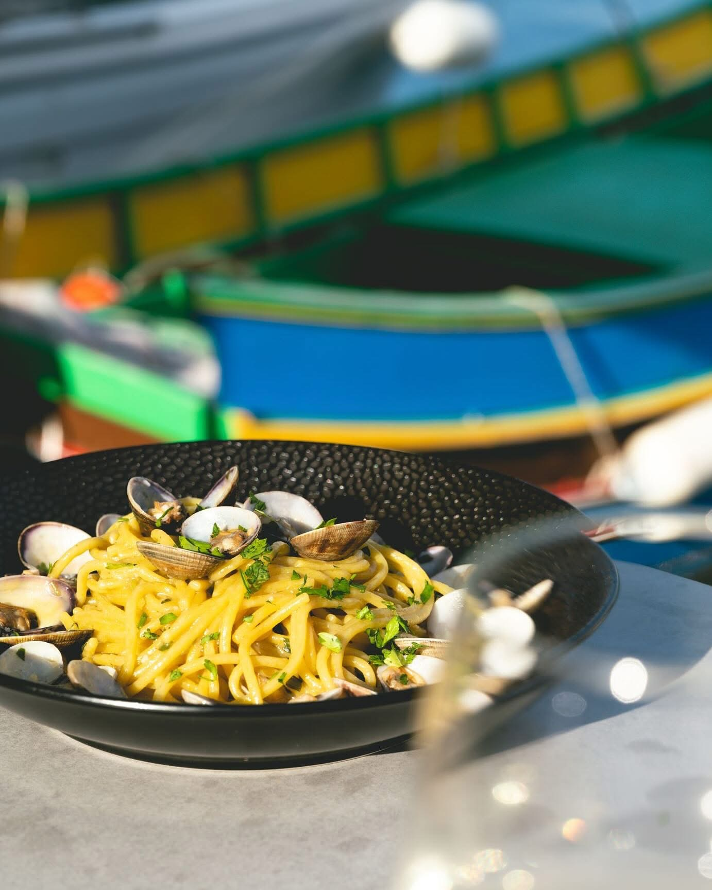
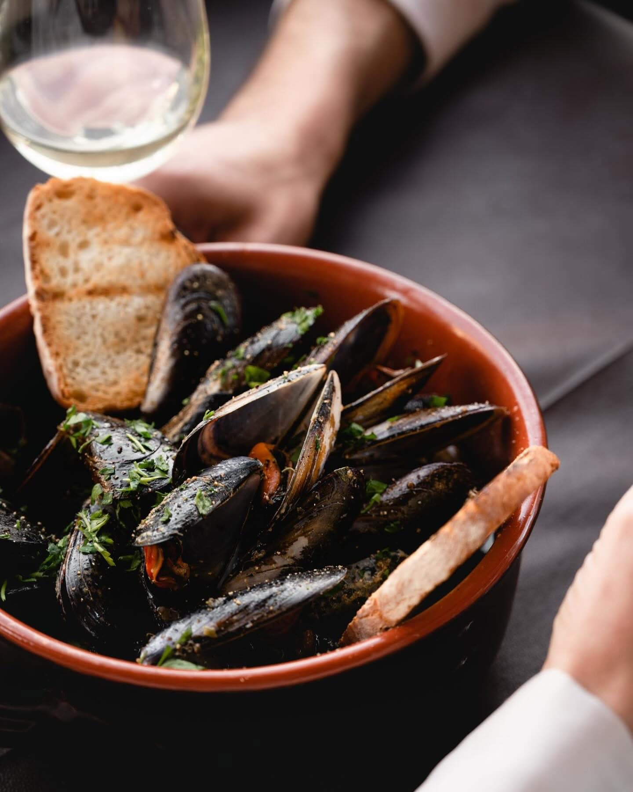
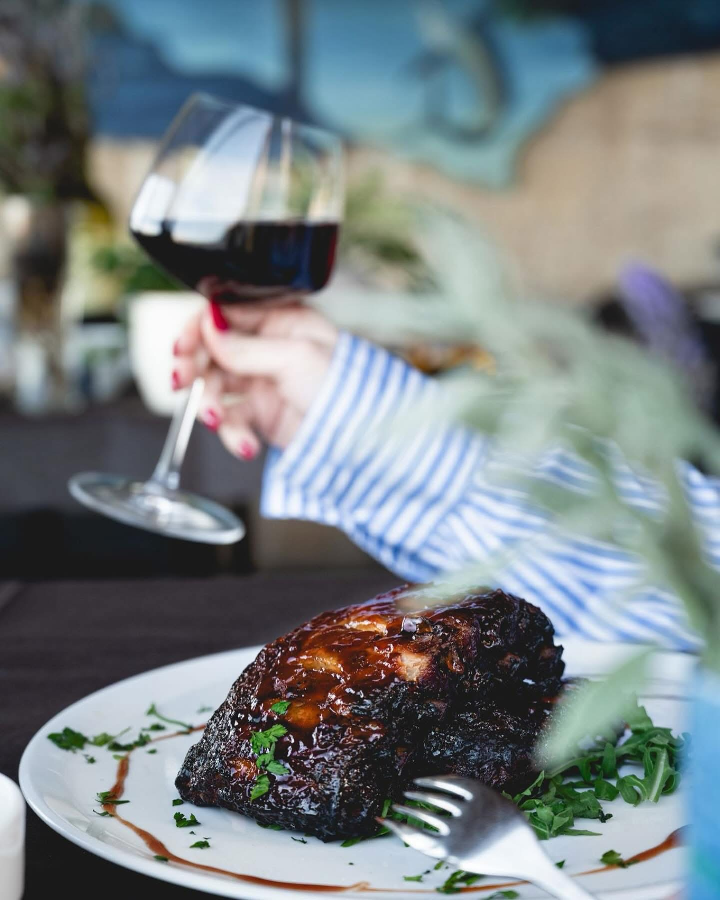
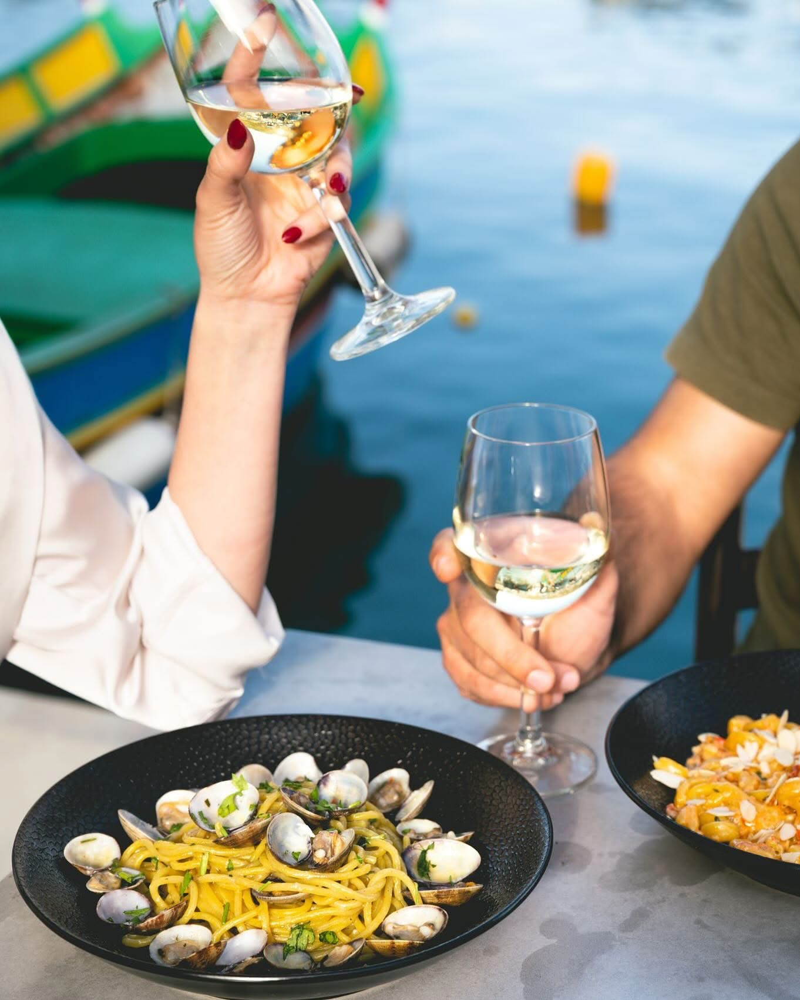
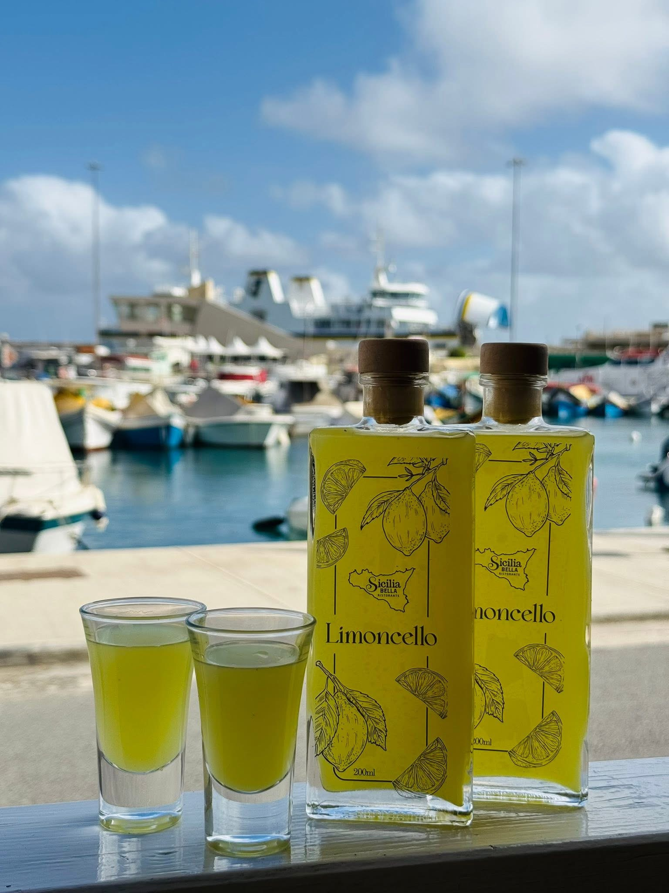

SICILIA BELLA · MĠARR HARBOUR, GOZO
Sicily,
by the sea.
Sicilian flavours. Harbour views.
A table worth making time for.
PASTA · SEAFOOD · SICILIAN CUISINEDiscover Sicilia Bella


AT THE TABLEA taste of
01 / 03
A taste of
the Mediterranean.
Pasta, seafood and a view that invites you to stay.
Find your favourite on the menuMĠARR HARBOUROne more course.
One more course.
A little longer.
A table by the harbour. A glass raised.
The pleasure of being right here.


YOUR TABLE IN GOZOShall we
Shall we
save you a seat?
Call us to check availability and reserve your table.
Sicilia Bella Ristorante
Triq Manoel de Vilhena
Mġarr Harbour, Gozo